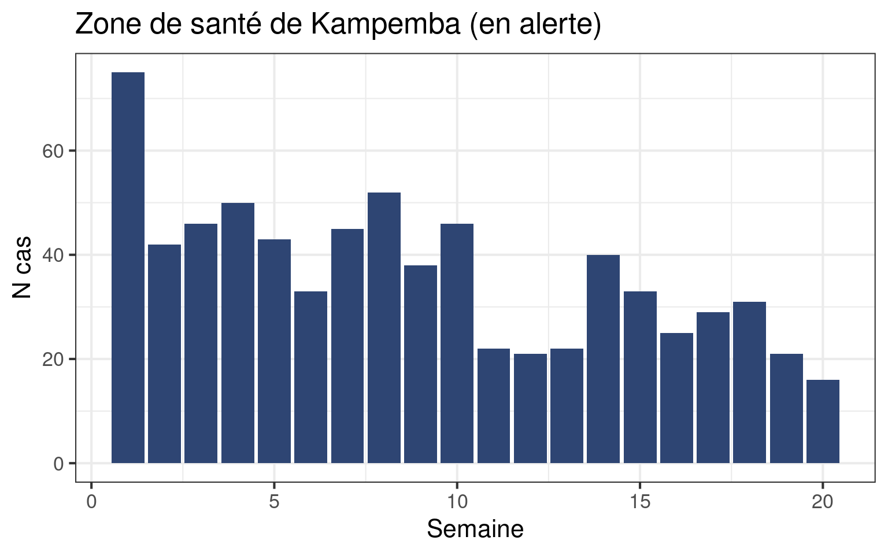
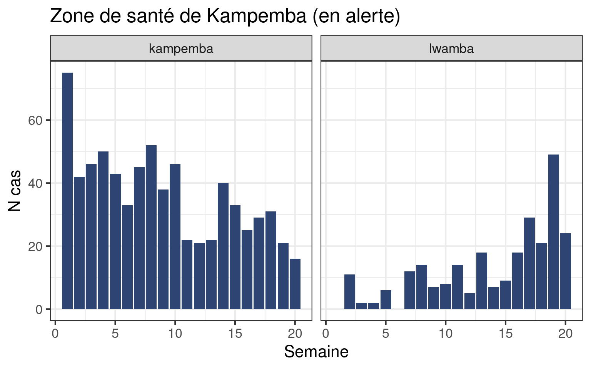

Surveillance
Objectifs
- Travailler les compétences acquises dans les deux modules FETCH-R (importation, nettoyage et visualisation des données).
- Analyser des données de surveillance rougeole pour détecter les alertes et aider à prioriser quelles alertes doivent être approfondies avec une enquête sur le terrain.
Introduction
Ce satellite accompagne l’étude de cas Réponse d’urgence contre la rougeole dans la région du Katanga (RDC) du module FETCH Surveillance. Ça n’a probablement pas beaucoup de sens d’essayer de le suivre sans les documents et les discussions de l’étude.
En ce qui concerne la partie R du module surveillance, nous nous appuierons sur les compétences acquises tout au long des modules FETCH-R, et introduirons quelques nouvelles fonctions utiles pour le nettoyage et les analyses.
N’hésitez pas à checker vos notes, vos scripts ou les tutoriels des sessions précédentes pour vous rafraîchir sur le fonctionnement de certaines fonctions quand vous en éprouvez le besoin.
Mise en place (Question 2)
Comme cette session fait partie d’un module spécifique, vous allez créer un nouveau projet RStudio. Jetez un coup d’œil à la session principale si vous ne vous rappelez plus comment faire.
Créer le projet
- Créez un dossier
surveillance_case_studysur votre ordinateur, associé avec le module Surveillance du FETCH. Ajoutez les sous dossiers suivants à l’intérieur :
- 📁 data
- 📁 clean
- 📁 raw
- 📁 R
- 📁 outputs
Créez un projet RStudio à la racine du dossier
surveillance_case_study.Si vous n’avez pas encore les données, téléchargez-les.
4. Dézippez l’archive si vous venez de télécharger les données. Quelle que soit la source, enregistrez les deux fichiers Excel dans le sous dossier data/raw.
5. Créez un nouveau script import_nettoyage.R et enregistrez-le dans le sous dossier R. Ajoutez les métadonnées et une section pour charger les paquets {here}, {rio}, et {tidyverse}.
Importer les données
Rappel de l’étude de cas : vous avez demandé l’accès aux données de surveillance de routine et aux données de laboratoire au MSP de la RDC. Le ministère a accepté de les partager avec vous toutes les semaines. Vous recevez le premier fichier à la semaine 20 en 2022 (note : les données sur lesquelles nous travaillerons sont simulées).
Si vous ne l’avez pas déjà fait, ouvrez les deux fichiers dans un tableur (Excel ou autre) pour les inspecter avant l’importation.
Le jeu de données de surveillance a l’air facile à importer. En revanche, le jeu de données laboratoire pourrait vous inquiéter, avec ses lignes supplémentaires avant les données… Heureusement, la fonction import() que nous utilisons a un argument skip qui permet de gérer ce cas courant :
# NE PAS EXÉCUTER (PSEUDO-CODE)
import(
here("data", "raw", "fichier_exemple.xlsx"),
skip = 3 # Sauter les trois premières lignes, l'import commence à la ligne 4
) Ajoutez une section pour l’import des données à votre script.
Importez le jeu de données surveillance et stockez le dans un objet
df_surv_brut. Ensuite, importez le jeu de données laboratoire et stockez le dans un objetdf_labo_brut.Vérifiez que l’importation s’est bien passée pour les deux data frames (vous avez plusieurs outils à votre disposition : Viewer, dimensions de l’objet, haut et bas du data frame…).
Nettoyage (Question 2 and 3)
Maintenant que les données sont importées, nous pouvons effectuer quelques vérifications dessus, et les nettoyer.
Données de surveillance (Q2)
Inspection rapide
Pendant l’étude de cas vous n’aurez peut-être pas le temps d’inspecter et nettoyer toutes les colonnes. Nous vous proposons donc de vous focaliser sur quelques colonnes clés : zone_sante, semaine, totalcas et totaldeces.
Si vous revenez sur le tutoriel plus tard ou finissez en avance, n’hésitez pas à vérifier la qualité des autres variables, et à recouper les informations de différentes colonnes. Nous vous renvoyons à la discussion lors de l’étude ou aux documents du module de gestion des données pour des idées de vérifications à effectuer.
Ajoutez une section pour l’exploration et le nettoyage des données de surveillance dans votre script.
Maintenant, explorez le data frame et répondez aux questions suivantes :
- Quels sont les noms des colonnes ?
- Combien de provinces y a-t-il dans le jeu de données actuel ? Cela correspond-il à ce que vous attendez ?
- Combien de zones de santé y a-t-il dans le jeu de données ? Cela correspond-il à ce que vous attendez ?
- Quel est la plage des semaines ?
- Quelle est la valeur minimale de
totalcas? - Quel est le maximum de
totaldeces? - Remarquez-vous des données manquantes pour les colonnes ci-dessus ? Les chaînes de caractère (rappel : le texte) sont-elles propres ?
Nettoyer les chaînes de caractères
Maintenant que nous avons une meilleure idée de l’état des données, nettoyons-les. Nous allons écrire un pipeline de nettoyage (ou chaîne de commandes) comme dans les modules R précédents (voir votre code à la fin du module de nettoyage).
Pour faciliter le débogage de la chaîne de commandes, ajoutez et testez les étapes unes par unes !
Nous allons améliorer un peu les colonnes de texte afin d’éliminer des problèmes potentiels :
- passer tout en minuscules (homogénéise)
- supprimer les espaces surnuméraires (éventuels)
- remplacer
-et les espaces par_.
Peut être que vous n’aurez pas le temps de faire ces étapes pour toutes les colonnes. Pour commencer, choisissez une de ces deux colonnes : zone_sante ou prov pour appliquer les instructions. Vous pourrez faire les autres plus tard.
Commencez un pipeline de nettoyage avec un mutate() pour transformer la colonne de votre choix en minuscules.
Nous allons maintenant voir deux petites fonctions très utiles pour le nettoyage du texte. La première est la fonction str_squish() du paquet {stringr} (la page d’aide), qui supprime les espaces au début ou à la fin des chaînes de caractères, et les espaces surnuméraires ou qu’ils soient :
exemples <- c(" Espaces au début et à la fin ",
"Espaces multiples",
" Tous les problèmes ")
str_squish(exemples)[1] "Espaces au début et à la fin" "Espaces multiples"
[3] "Tous les problèmes" L’autre fonction, str_replace (également du paquet {stringr}) remplace un bout de texte dans une chaîne de caractères par un autre bout de texte, sans surprise. L’argument pattern accepte le texte à remplacer, et l’argument replacement le texte à utiliser comme remplacement.
str_replace(
"HAUT-KATANGA", # Le texte sur lequel on travaille (peut être une colonne)
pattern = "-", # Le bout à remplacer
replacement = "_" # Le remplacement
)[1] "HAUT_KATANGA"Ajoutez des lignes à votre mutate pour, sur la colonne de votre choix :
- Nettoyer les espaces
- Changer les
-et les espaces en_(deux étapes)
Le début d’au moins une des colonnes devrait ressembler à :
pays province zone_sante maladie
1 rdc haut_katanga mufunga_sampwe rougeole
2 rdc haut_katanga sakania rougeole
3 rdc haut_katanga mitwaba rougeole
4 rdc haut_katanga kilela_balanda rougeole
5 rdc haut_katanga likasi rougeole
6 rdc haut_katanga kikula rougeoleStockez le résultat dans un data frame df_surv.
Enregistrer les données nettoyées
Utilisez le paquet {rio} pour exporter df_surv vers un fichier .rds appelé data_ids_2022-20_clean dans le sous dossier data/clean de votre projet.
Données labo (Q2)
Nous allons suivre les mêmes étapes pour le jeu de données laboratoire. Nous nous focaliserons sur les colonnes zone_sante, igm_rougeole et igm_rubeole.
Inspection rapide
Inspectez les colonnes mentionnées, et les dimensions du data frame.
Quelles sont les catégories des colonnes igm_rougeole et igm_rubeole ? Quel type de nettoyage sera à effectuer dessus ?
Nettoyage et recodage
Démarrez un nouveau pipeline de nettoyage pour les données labo. Choisissez une colonne de texte et passez là en minuscules, puis supprimez les espaces surnuméraires. Enfin, remplacez les espaces et les
-par_.Recodez au moins une des colonnes
igm_rougeoleouigm_rubeolepour que les catégories soientnegatif,positifetindeterminé.Stockez la version nettoyée dans un data frame
df_labo
L’en-tête des colonnes nettoyées devrait maintenant être :
zone_sante igm_rougeole igm_rubeole
1 kambove negatif negatif
2 kambove negatif negatif
3 kambove negatif positif
4 kambove negatif negatif
5 kambove negatif positif
6 kambove negatif negatif
7 kambove negatif negatif
8 kambove negatif positif
9 manika negatif negatif
10 kamalondo negatif negatifVous pouvez utiliser la fonction case_when() pour recoder les colonnes contenant les résultats des tests anticorps.
Enregistrer les données nettoyées
Exportez le data frame df_labo vers un fichier .rds appelé df_labo_2022-w20_clean dans le sous dossier data/clean de votre projet.
Aller plus loin
Vous êtes arrivés au bout de la question 2. Si vous avez terminé en avance, utilisez les fonctions vues pour nettoyer les autres colonnes de texte dans les deux data frames, et recodez les deux colonnes IGM dans les données labo.
Si vous avez encore du temps, inspectez vos données plus avant :
- Affichez la zone de santé pour laquelle les totaux par groupe d’âge sont différents de la colonne total (pour les cas, puis pour les décès)
- Est-ce qu’il y a une ZS où le nombre de décès est plus élevé que le nombre de cas ?
- Y a-t-il des lignes dupliquées (entièrement dupliquées, ou plusieurs valeurs pour la zone de santé et la semaine) ?
- Y a-t-il des nombres de cas que vous estimez aberrants ?
Données de surveillance complétées (Q3)
Durant l’inspection des données vous avez du vous rendre compte qu’il y a des semaines manquantes pour certaines ZS dans les données de surveillance. Normalement, vous avez discuté les raisons possibles et des problèmes associés en plénière. Dans ce tutoriel, nous allons fournir le code pour compléter le data frame surveillance pour que toutes les ZS aient toutes les semaines (en faisant l’hypothèse que les semaines manquantes n’ont pas eu de cas ou de décès).
Nous utiliserons la fonction complete() du paquet {tidyr} pour ajouter les lignes manquantes et remplir les colonnes contenant des nombres (totalcas et totaldeces) avec des zéros. A cause des contraintes de temps nous allons vous donner le code, mais quelques exemples et explications seront donnés dans la section Aller plus loin, que vous pourrez lire quand vous aurez le temps.
Commencez un nouveau pipeline à partir de
df_survet ne conservez dedans que les colonnesprovince,zone_sante,semaineettotalcas.Ajoutez une nouvelle étape à votre pipeline et collez le code ci-dessous pour compléter le data frame :
complete(
# On travaille sur les combinaisons existantes de province et ZS
nesting(province, zone_sante),
# On voudra toutes les semaines entre le minimum (1) et le maximum (20) de la colonne semaine
semaine = seq(min(semaine, na.rm = TRUE),
max(semaine, na.rm = TRUE)),
# Remplir les nouvelles semaines de zeros pour ces colonnes :
fill = list(totalcas = 0,
totaldeces = 0
)
) - Stockez le résultat dans un data frame appelé
df_surv_sem, qui devrait ressembler à :
# A tibble: 10 × 5
province zone_sante semaine totalcas totaldeces
<chr> <chr> <dbl> <dbl> <dbl>
1 haut_katanga kafubu 1 0 0
2 haut_katanga kafubu 2 0 0
3 haut_katanga kafubu 3 0 0
4 haut_katanga kafubu 4 0 0
5 haut_katanga kafubu 5 0 0
6 haut_katanga kafubu 6 0 0
7 haut_katanga kafubu 7 0 0
8 haut_katanga kafubu 8 0 0
9 haut_katanga kafubu 9 0 0
10 haut_katanga kafubu 10 0 0- exportez ce data frame dans un fichier
.rdsappelédata_ids_2022-w20_weeks_cleandans le sous dossierdata/cleande votre projet.
Aller plus loin
C’est la fin de la question 3. Si vous terminez en avance, finissez l’inspection des données, listez les problèmes et nettoyez les colonnes que vous savez nettoyer avant de réexporter. Si c’est fait, lisez les eplications sur la fonction complete() et allez explorer sa page d’aide.
Définir les alertes (Question 4)
Préparer le jeu de données
Nous allons continuer la préparation de data frames prêts pour l’analyse.
- Si vous n’avez pas eu le temps de nettoyer la zone de santé et la province dans les deux data frames, et les deux colonnes IGM dans le jeu de données labo, vous pouvez importer les jeux de données nettoyés :
Dézippez l’archive et importez les données dans le sous dossier data/clean
Créez un script
analyse_surveillance.Rdans le sous dossierR. Ajoutez les métadonnées, et une section pour importer les paquets{here},{rio},{tidyverse},{lubridate}et{zoo}.Ajoutez une section d’import des données propres et importez les fichiers
.rdsdans R en utilisant la fonctionimport()comme d’habitude (soit les vôtres, soit ceux que vous venez de télécharger). Assignez ces données nettoyées aux data framesdf_surv,df_laboanddf_surv_sem.
Sélection des ZS
Pour simplifier le travail nous allons nous focaliser sur quatre zones de santé : Dilolo, Kampemba, Kowe, et Lwamba.
Commencez une nouvelle chaîne de commande à partir du data frame df_surv_sem. La première étape est de filtrer les données pour ne conserver que les zones de santé Dilolo, Kampemba, Kowe, et Lwamba.
Indicateur hebdomadaire
Notre premier indicateur regarde si une zone de santé a 20 cas suspects ou plus dans une semaine. Cet indicateur est dichotomique et ne prend en compte que les données d’une zone de santé pour une semaine donnée (ça tombe bien, ça correspond aux lignes du data frame).
Ajoutez un mutate() à votre chaîne pour créer une colonne cas20 qui contient la valeur 1 si une ZS a 20 cas ou plus cette semaine-là, et 0 sinon.
Le début du data frame ressemble à ça :
# A tibble: 10 × 6
province zone_sante semaine totalcas totaldeces cas20
<chr> <chr> <dbl> <dbl> <dbl> <dbl>
1 haut_katanga kampemba 1 75 0 1
2 haut_katanga kampemba 2 42 0 1
3 haut_katanga kampemba 3 46 0 1
4 haut_katanga kampemba 4 50 0 1
5 haut_katanga kampemba 5 43 0 1
6 haut_katanga kampemba 6 33 0 1
7 haut_katanga kampemba 7 45 0 1
8 haut_katanga kampemba 8 52 0 1
9 haut_katanga kampemba 9 38 0 1
10 haut_katanga kampemba 10 46 0 1Indicateur cumulé
Notre second indicateur regarde si une zone de santé compte plus de 35 cas suspects cumulés en trois semaines. C’est un peu plus compliqué à calculer que l’indicateur hebdomadaire : pour chaque zone de santé, il faut calculer la somme des cas par fenêtres de trois semaines, mais les groupes ne sont pas fixes, ils glissent dans le temps. Nous entrons ici dans le domaine des moyennes/sommes/etc. mobiles ou glissantes…
Somme cumulée
Nous allons utiliser la fonction rollapply() du paquet {zoo} pour calculer la somme cumulée car elle est polyvalente et puissante. Comme son nom l’indique, la fonction rollapply() applique une fonction de manière glissante (roll peut être traduit ici en “rouler”) à un vecteur ou à une colonne d’un data frame.
Comme nous sommes contraint par le temps, nous allons vous fournir ici le code pour calculer la somme cumulée, et nous vous donnerons plus de détails sur la fonction dans la section Aller plus loin que vous pourrez lire quand vous aurez le temps.
Voici comment utiliser la fonction pour une zone de santé :
# Crée un mini data frame pour l'exemple
exemple_df = data.frame(
province = "Haut Katanga",
zone_sante = "Dilolo",
semaine = 1:10,
totalcas = rep(1, times = 10))
exemple_df province zone_sante semaine totalcas
1 Haut Katanga Dilolo 1 1
2 Haut Katanga Dilolo 2 1
3 Haut Katanga Dilolo 3 1
4 Haut Katanga Dilolo 4 1
5 Haut Katanga Dilolo 5 1
6 Haut Katanga Dilolo 6 1
7 Haut Katanga Dilolo 7 1
8 Haut Katanga Dilolo 8 1
9 Haut Katanga Dilolo 9 1
10 Haut Katanga Dilolo 10 1exemple_df |>
mutate(cas_cumu = rollapply(
data = totalcas, # La colonne cible
width = 3, # La taille de la fenêtre
FUN = sum, # La fonction à appliquer, ici la somme
align = "right", # On cumule les valeurs passées jusqu'à présent
partial = TRUE, # Les somme partielles sont autorisées
na.rm = TRUE # Argument en plus à passer à la fonction sum()
)
) province zone_sante semaine totalcas cas_cumu
1 Haut Katanga Dilolo 1 1 1
2 Haut Katanga Dilolo 2 1 2
3 Haut Katanga Dilolo 3 1 3
4 Haut Katanga Dilolo 4 1 3
5 Haut Katanga Dilolo 5 1 3
6 Haut Katanga Dilolo 6 1 3
7 Haut Katanga Dilolo 7 1 3
8 Haut Katanga Dilolo 8 1 3
9 Haut Katanga Dilolo 9 1 3
10 Haut Katanga Dilolo 10 1 3Ok, mais nous voudrions utiliser cette fonction dans un data frame qui contient plusieurs zones de santé, et faire la somme cumulée par zone de santé. Ce n’est pas si compliqué : nous allons trier notre jeu de données par zone de santé et semaine, puis utiliser l’argument .by dans le mutate pour effectuer les actions par zone de santé.
Rappelez-vous, nous avons déjà vu le .by. Nous l’avons utilisé au sein de la fonction summarize() lors de la session sur les tableaux agrégés pour faire des résumés par groupe.
C’est la même idée aujourd’hui, sauf qu’au lieux d’utiliser une fonction qui ne renvoie qu’une seule valeur par groupe (summarize()) nous allons utiliser une fonction qui retourne une valeur par ligne (mutate()), mais prendra en compte les informations du groupe.
Pour petit rappel de comment summarize() + .by fonctionne, voici comment nous calculons le nombre total de cas suspects et décès par province :
df_surv_sem |>
summarize(
.by = province, # Fait les choses PAR province
cas_tot = sum(totalcas, na.rm = TRUE),
deces_tot = sum(totaldeces, na.rm = TRUE)
)# A tibble: 4 × 3
province cas_tot deces_tot
<chr> <dbl> <dbl>
1 haut_katanga 5948 34
2 haut_lomami 6928 70
3 lualaba 1485 3
4 tanganyika 7836 137- Ajoutez une étape à votre pipeline pour trier les données par province, zone de santé et semaine (dans cet ordre) avec la fonction
arrange(), qui est une fonction de tri du package{dplyr}:
df_surv_sem |>
arrange(province, zone_sante, semaine)- Ajoutez ensuite le code pour calculer la somme cumulée :
mutate(
.by = c(province, zone_sante),
cas_cumu = rollapply(
data = totalcas, # La colonne cible
width = 3, # La taille de la fenêtre
FUN = sum, # La fonction à appliquer, ici la somme
align = "right", # On cumule les valeurs passées jusqu'à présent
partial = TRUE, # Les somme partielles sont autorisées
na.rm = TRUE # Argument en plus à passer à la fonction sum()
)
)Maintenant que la somme cumulée est calculée, il ne nous reste plus qu’à calculer l’indicateur dichotomique qui résume les données cumulées pour chaque semaine, puis un indicateur combiné qui résume les deux indicateurs précédents.
Ajoutez une nouvelle étape à votre pipeline pour créer une colonne
cas_cumu35qui contient1si la somme cumulée est supérieure ou égale à 35, et0sinon.Dans le même mutate, ajoutez une colonne
alerte, qui est1si ’l’indicateurcas20OU l’indicateurcas_cumu35est1et0sinon. Pour lest logique vous devrez utiliser l’opérateur|qui représente le OU logique (renverraTRUEsi au moins une des conditions est remplie, à fortiori les deux).Assignez le résultat à un data frame
data_alerte.
Ce data frame ressemble à ceci (quelques colonnes sont cachées pour l’affichage) :
# A tibble: 10 × 7
zone_sante semaine totalcas cas20 cas_cumu cas_cumu35 alerte
<chr> <dbl> <dbl> <dbl> <dbl> <dbl> <dbl>
1 kampemba 1 75 1 75 1 1
2 kampemba 2 42 1 117 1 1
3 kampemba 3 46 1 163 1 1
4 kampemba 4 50 1 138 1 1
5 kampemba 5 43 1 139 1 1
6 kampemba 6 33 1 126 1 1
7 kampemba 7 45 1 121 1 1
8 kampemba 8 52 1 130 1 1
9 kampemba 9 38 1 135 1 1
10 kampemba 10 46 1 136 1 1Zones de santé en alerte
Maintenant que la préparation est finie, nous pouvons enfin regarder quelles zones de santé sont en alerte dans notre jeu de données, en particulier à la semaine 20 (les données les plus récentes selon l’étude de cas).
Affichez les données filtrées pour ne voir que ce qui se passe à la semaine 20. Quelle zones sont en alerte en ce moment ?
Créez un vecteur zs_alerte qui contient le nom des zones de santé qui sont en alerte à la semaine 20. Ce vecteur sera utilisé par la suite pour filtrer les données lors de l’analyse.
Tracer la courbe épidémique (Question 4)
Nous allons à présent tracer la courbe épi pour les zones en alerte à la semaine 20. Nous pouvons réutiliser le code vu lors de la session sur les courbes épidémiques : nous utiliserons le paquet ggplot() et la fonction geom_col() pour créer un diagramme qui montre la distribution des cas par semaine. Petite nouveauté : par le passé nous avions une liste linaire où une ligne correspond à un patient, donc un cas. Aujourd’hui nous avons des données déjà agrégées par semaine et zone de santé : nul besoin de compter le nombre de cas nous même.
Tracez la courbe épidémique pour une des zones de santé en alerte.
Le graphe devrait ressembler à ceci (peut être avez-vous choisi l’autre zone) :

Nouvelle fonction utile, la fonction facet_wrap() permet de créer plusieurs graphiques d’un seul coup rassemblés en une seule figure. Consultez le satellite sur le faceting si vous voulez en savoir plus.
data_alerte |>
filter(zone_sante %in% zone_sante_alertee) |>
ggplot(aes(x = semaine,
y = totalcas)) +
geom_col(fill = "#2E4573") +
theme_bw(base_size = 16) +
labs(x = "Semaine",
y = "N cas",
title = "Zone de santé de Kampemba (en alerte)") +
facet_wrap(vars(zone_sante)) # Un graphe par zone de santé
Indicateurs clés (Question 6)
Nous pouvons calculer plus d’indicateurs sur les zones de santé pour nous aider à décider laquelle devrait faire l’objet d’une enquête (vu que vous n’avez pas le temps ni les ressources pour investiguer les deux).
Cette partie utilise les fonctions d’aggrégation vues quand nous avons appris à faire des tableaux résumés. N’hésitez pas à vous rafraîchir si besoin.
Première semaine en alerte
Utilisez la fonction summarize() pour afficher les premières semaines où les ZS sont passées en alerte. Quelle zone de santé a été en alerte en premier ?
Indicateurs des données de surveillance
Reprenons le jeu de données de surveillance avec toutes les colonnes, df_surv.
Ajoutez-lui une colonne
cas_moins_5ansqui contient le nombre total de cas rapportés ayant moins de cinq ans.Dérivez, pour chaque zone en alerte, les indicateurs suivants, organisés en un seul tableau :
- Le nombre de cas
- Le nombre de morts
- Le nombre de moins de cinq ans
- La mortalité en pourcentage
- Le pourcentage de moins de cinq ans.
Le résultat ressemble à :
zone_sante n_cas n_deces n_moins_5 p_moins_5 mortalite
1 kampemba 730 0 544 74.52055 0.00000
2 lwamba 256 2 233 91.01562 0.78125Indicateurs des données labo
Intéressons-nous à présent aux données de laboratoire pour compléter les indicateurs précédents.
Pour chacune des zones en alerte, dérivez les indicateurs suivants :
- Le nombre de patients testés pour la rougeole
- Le nombre de positifs pour la rougeole
- La proportion de positifs pour la rougeole
- Le nombre de patients testés pour la rubéole
- Le nombre de positifs pour la rubéole
- La proportion de positifs pour la rubéole
Le résultat devrait ressembler à ceci :
zone_sante n_test_roug n_test_roug_pos positivite_roug n_test_rub
1 lwamba 10 5 0.5000000 10
2 kampemba 14 4 0.2857143 14
n_test_rub_pos positivite_rub
1 0 0.00000000
2 1 0.07142857Si vous avez du mal avec cette question, rafraîchissez-vous sur les résumés conditionnels.
C’est fini !
Bravo, vous êtes venus à bout de ce tutoriel !
Aller plus loin
Explications sur complete()
Dans le mini exemple ci-dessous la zone de santé de Kitenge n’a pas de ligne pour la semaine 2 :
# Data frame simplifié, avec seulement trois semaines
exemple_df = data.frame(
province = c("haut_katanga", "haut_katanga", "haut_katanga", "haut_lomami", "haut_lomami"),
zone_sante = c("likasi", "likasi", "likasi", "kitenge", "kitenge"),
semaine = c(1, 2, 3, 1, 3),
totalcas = c(2, 1, 3, 1, 2))
exemple_df province zone_sante semaine totalcas
1 haut_katanga likasi 1 2
2 haut_katanga likasi 2 1
3 haut_katanga likasi 3 3
4 haut_lomami kitenge 1 1
5 haut_lomami kitenge 3 2Nous pouvons utiliser le code suivant pour compléter toutes les zones de santé pour qu’elles aient toutes les semaines possible, ici les semaine de un à trois :
# Compléte la semaine manquante à Kitenge
exemple_df |>
complete(
nesting(province, zone_sante),
semaine = seq(1, 3), # Vecteur de 1 à 3
fill = list(totalcas = 0) # Remplir avec des zéros (sinon, NA par défaut)
) # A tibble: 6 × 4
province zone_sante semaine totalcas
<chr> <chr> <dbl> <dbl>
1 haut_katanga likasi 1 2
2 haut_katanga likasi 2 1
3 haut_katanga likasi 3 3
4 haut_lomami kitenge 1 1
5 haut_lomami kitenge 2 0
6 haut_lomami kitenge 3 2Maintenant les deux zones de santé dans les deux provinces ont toutes les semaines possibles.
Vous vous demandez peut être pourquoi nous avons écrit nesting(province, zone_sante) au lieu de juste zone_sante. La raison est qu’il peut y avoir deux zones de santé avec le même nom dans des provinces différentes. Nous devons donc tenir compte de la colonne province. L’argument nesting() indique à la fonction de n’utiliser que les combinaisons existantes des deux colonnes dans le data frame.
Petit encart pour voir ce qui se serait passé si nous avions passé les deux colonnes à la fonction complete() sans utiliser nesting() : la fonction aurait créé toutes les combinaisons possibles entre les catégories des colonnes province et zone_sante, ce qui n’a pas de sens dans notre cas.
exemple_df |>
complete(
province, zone_sante,
semaine = seq(1, 3), # Vecteur de 1 à 3
fill = list(totalcas = 0)
) # A tibble: 12 × 4
province zone_sante semaine totalcas
<chr> <chr> <dbl> <dbl>
1 haut_katanga kitenge 1 0
2 haut_katanga kitenge 2 0
3 haut_katanga kitenge 3 0
4 haut_katanga likasi 1 2
5 haut_katanga likasi 2 1
6 haut_katanga likasi 3 3
7 haut_lomami kitenge 1 1
8 haut_lomami kitenge 2 0
9 haut_lomami kitenge 3 2
10 haut_lomami likasi 1 0
11 haut_lomami likasi 2 0
12 haut_lomami likasi 3 0Comme la base de données va être mise à jour chaque semaine, il serait pratique de choisir automatiquement la plage des semaines qui doivent être présentes dans les données. Pour ça, il nous suffit de remplacer les valeurs que nous avons codé en dur par la plus petite semaine existante dans les données et la plus grande :
exemple_df |>
complete(
nesting(province, zone_sante),
semaine = seq(min(semaine, na.rm = TRUE), # Vecteur allant du minimum
max(semaine, na.rm = TRUE)), # au maximum de la colonne `semaine`
fill = list(totalcas = 0)
) # A tibble: 6 × 4
province zone_sante semaine totalcas
<chr> <chr> <dbl> <dbl>
1 haut_katanga likasi 1 2
2 haut_katanga likasi 2 1
3 haut_katanga likasi 3 3
4 haut_lomami kitenge 1 1
5 haut_lomami kitenge 2 0
6 haut_lomami kitenge 3 2Explications sur rollaply()
Pour calculer la somme cumulée des cas sur trois semaine il nous faut appliquer (apply en anglais) la fonction sur des fenêtres glissantes de trois semaines.
# Vecteur pour les exemples
exemple_vect <- rep(1, time = 10)
exemple_vect [1] 1 1 1 1 1 1 1 1 1 1rollapply(
data = exemple_vect,
width = 3, # Largeur de la fenêtre
FUN = sum, # Fonction à appliquer (ici, la somme)
align = "right" # Calcul dans le passé
)[1] 3 3 3 3 3 3 3 3Nous avons fourni en entrée un vecteur de 10 valeurs et obtenu en sortie un vecteur contenant les sommes. Manifestement, la fonction a fait des choix sur comment traiter les extrémités, et le résultat est plus court que le vecteur d’entré. Ce dernier point est un problème si l’on veut utiliser la fonction dans un mutate(), qi crée des colonnes dans un data frame, où toutes les colonnes ont la même taille.
Il est possible de contrôler le comportement de la fonction aux extrémités :
- Remplir les valeurs pour lesquelles il n’y a pas assez de valeur dans la fenêtre avec des
NA - Autoriser des calculs partiels (ici, des sommes partielles, en d’autres termes des valeurs ne représentent pas la somme sur trois semaines).
L’argument fill = NA remplit les valeurs manquantes aux extrémités concernées avec des NA (dans notre cas, à gauche, vu que l’on a aligné la fenêtre à droite) :
rollapply(
data = exemple_vect,
width = 3, # Largeur de la fenêtre
FUN = sum, # Fonction à appliquer (ici, la somme)
align = "right", # Calcul dans le passé
fill = NA
) [1] NA NA 3 3 3 3 3 3 3 3C’est souvent une façon raisonnable de gérer les valeurs aux extrémités où les fenêtres ne sont pas complètes. Néanmoins, dans notre cas, nous pouvons faire mieux. En effet, imaginons qu’il y ait 40 cas lors de la première semaine : même si nous n’avons pas de valeurs pour les deux semaines précédentes, l’alerte devrait être déclenchée ! Nous voudrions donc que la somme cumulée soit calculée dès la première semaine pour pouvoir détecter des alertes précoces ! L’argument partial = TRUE permet cela :
rollapply(
data = exemple_vect,
width = 3, # Largeur de la fenêtre
FUN = sum, # Fonction à appliquer (ici, la somme)
align = "right", # Calcul dans le passé
partial = TRUE # Autorise les sommes partielles aux extrémités
) [1] 1 2 3 3 3 3 3 3 3 3C’est mieux comme ça pour notre cas d’usage.
Gardez à l’esprit que les deux premières valeurs du vecteur (ou de la colonne) contiennent donc des sommes partielles. En conséquence, une absence d’alerte dans les deux premières semaines ne veut pas forcement dire grand chose.
Un dernier point : rappelez-vous qu’il faut utiliser na.rm = TRUE pour ignorer les valeurs manquantes dans la plupart des opérations arithmétiques dans R.
Si nous avions un vecteur un peu moins complet, nous aurions des problèmes :
exemple_vect_na <- c(1, 1, 1, NA, 1, 1)
rollapply(
data = exemple_vect_na,
width = 3, # Largeur de la fenêtre
FUN = sum, # Fonction à appliquer (ici, la somme)
align = "right", # Calcul dans le passé
partial = TRUE # Autorise les sommes partielles aux extrémités
)[1] 1 2 3 NA NA NAOups. Heureusement, nous pouvons passer l’argument na.rm = TRUE à la fonction rollapply() pour qu’elle le passe à la fonction sum().
rollapply(
data = exemple_vect_na,
width = 3, # Largeur de la fenêtre
FUN = sum, # Fonction à appliquer (ici, la somme)
align = "right", # Calcul dans le passé
partial = TRUE, # Autorise les sommes partielles aux extrémités
na.rm = TRUE # Argument en plus non nommé à passer à sum()
)[1] 1 2 3 2 2 2Enfin, quelues mots sur l’argument align. Il définit la position de la fenêtre glissante par rapport à la valeur en train d’être calculée. Par défaut la fenêtre est centrée autour de la valeur à cacluler : la valeur calculée i est la somme des valeurs i-1 (la valeur précédente) et la valeur i+1 (la valeur suivante).
Exemples des trois alignements (en mettant des valeurs manquantes aux extrémités pour voir plus facilement ce qui se passe) :
# Alignement à gauche : la valeur est la somme des valeurs dans le futur
rollapply(data = c(5, 10, 1, 2, 5, 10),
width = 3,
FUN = sum,
align = "left",
fill = NA)[1] 16 13 8 17 NA NA# Alignement centré : somme des valeurs de chaque côté
rollapply(data = c(5, 10, 1, 2, 5, 10),
width = 3,
FUN = sum,
align = "center",
fill = NA) # The default[1] NA 16 13 8 17 NA# Alignement à droite : somme des valeurs passées jusqu'à présent
rollapply(data = c(5, 10, 1, 2, 5, 10),
width = 3,
FUN = sum,
align = "right",
fill = NA)[1] NA NA 16 13 8 17Dans notre cas, nous voulons que la valeur pour une semaine donnée reflète cette semaine et les deux semaines précédentes, donc nous utilisons l’argument align = "right", pour calculer dans le passé.
Dans ce tutoriel nous avons appliqué la fonction sum() à des fenêtres de trois semaines pour calculer une somme cumulée. Mais le code peut être facilement modifié pour calculer une moyenne glissante sur une fenêtre de votre choix !
Formatage des pourcentages
La fonction percent() du paquet {scales} formate une valeur ou un vecteur de valeurs en pourcentages.
scales::percent(0.8556)Il y a un argument accuracy pour contrôler le nombre de décimales à afficher :
scales::percent(0.8556,
accuracy = 0.1)Vous pouvez fournir un vecteur (ou une colonne !) de proportions à la fonction pour afficher les valeurs en pourcentages, ce qui est plus lisible dans un tableau résumé.
La colonne ainsi crée n’est plus une colonne numérique : l’ajout du signe % transforme la colonne en texte. Vous ne pourrez donc plus effectuer d’opérations arithmétiques dessus.